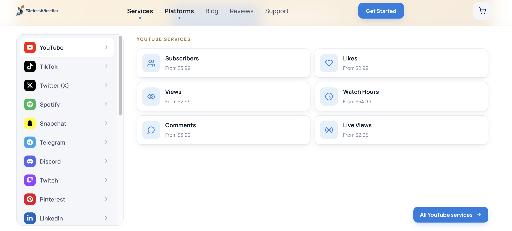

HardLaunch vs TokUpgrade (2026): Which TikTok Growth Tool Is Riskier?
Updated July 2026·7 min read
TL;DR
HardLaunch hosts real Android phones on physical server racks for high-volume posting, starting at $999/month (10-account minimum).
TokUpgrade runs automated follow/unfollow scripts on your existing profile, starting at $49/month per account, a pattern that carries real shadowban risk.
For a lower-cost, lower-risk approach, Tikomate provides pre-verified US TikTok accounts from $25 one-time with mobile behavior simulation instead of hardware or bot scripts.
HardLaunch and TokUpgrade both promise TikTok growth at scale, but through very different, and differently risky, mechanisms. HardLaunch throws capital at physical device infrastructure. TokUpgrade automates outbound engagement actions directly on your account. This guide compares the two and where each carries hidden cost or risk.
What is the main difference between HardLaunch and TokUpgrade?
HardLaunch is enterprise infrastructure: real Android phones hosted on physical server racks, sold with a 10-account minimum starting at $999/month. TokUpgrade is a legacy automation script: it executes follow, unfollow, and like loops directly on your profile via direct scripting, starting at $49/month per account.
TokUpgrade: Outbound follow/unfollow scripts, direct browser commands, $49/month per account (scaling to $89/month Premium).
$950
difference between TokUpgrade's $49/month Standard plan and HardLaunch's $999/month hosted fleet floor, though neither addresses the ban-risk pattern each carries in its own way.
Source: HardLaunch and TokUpgrade published pricing, 2026

TokUpgrade rebranded to SidesMedia, a broad social media engagement marketplace.
Go Deeper: Side-by-Side Breakdown
1. Infrastructure: Hosted Hardware vs Direct Account Scripts
HardLaunch's model requires significant capital expenditure on its end, real physical Android phones running on server racks, which is reflected in its steep monthly price. TokUpgrade requires no hardware at all, it runs automation scripts directly against your existing account credentials.
2. Ban Risk: High-Frequency Posting vs Repetitive Bot Actions
TokUpgrade's follow/unfollow loops repeat at regular, detectable intervals, a pattern TikTok's anti-bot systems are known to flag with Captchas and warning banners. HardLaunch's hosted devices avoid that specific detection signature since actions originate from distinct physical hardware, though high-frequency automated posting still carries its own platform risk.
3. Commitment: 10-Account Minimum vs Per-Account Subscription
HardLaunch requires committing to 10 accounts minimum before you can use the service at all, a real barrier for solo marketers or small teams. TokUpgrade sells per account with no stated minimum, but the price scales linearly and offers no discount for volume the way hosted fleet infrastructure typically would. Neither offers a low-cost, low-risk entry point the way a one-time account purchase does.
Where Does Tikomate Fit In?
HardLaunch demands a $999/month, 10-account commitment before you even start. TokUpgrade is cheaper per account but runs a bot-detection pattern TikTok actively flags. Tikomate takes a third path: pre-verified US TikTok accounts for a one-time $25 fee, warmed through mobile behavior simulation rather than hosted hardware or outbound scripts.
Why creators add Tikomate to the mix:
Tikomate Strengths
One-time $25 fee, no account minimums
Zero bans recorded across 5,000+ profiles (per published security audit)
Mobile scroll and gesture simulation, not outbound bot scripts
No SIM card, burner phone, VPN, or hosted hardware required
Best Paired With
Use Tikomate to source and warm your first US account safely
Scale to HardLaunch only once you have proven agency-level budget
Avoid TokUpgrade's outbound scripts on any account you want to keep
Both tools carry account-safety tradeoffs: TokUpgrade's repetitive scripting is a known bot-detection pattern, and HardLaunch's high-volume posting requires trusting a third party's hosted infrastructure entirely. Tikomate's mobile behavior simulation approach has recorded zero bans across 5,000+ profiles per its published creator security audit.
"TokUpgrade got two of our client accounts shadowbanned within a week due to repetitive follow actions. We switched to Tikomate's US accounts and mobile proxy blueprints, and we've scaled 15 accounts with zero issues."
Elena R. · Operations Director at Socialboost
Hosted device fleets vs direct-script automation: two different growth risk profiles.
Make Your Decision
HardLaunch makes sense only at agency scale with a $999+/month budget. TokUpgrade is cheap per account but carries a known bot-detection risk. If what you actually need is a safe, low-cost way to get a working US TikTok account, Tikomate's one-time $25 fee and zero-ban track record across 5,000+ profiles beats both on cost and risk.
Choose HardLaunch if…
You're a large agency ready to commit $999+/month for 10+ accounts
You want hardware-hosted accounts with replacement guarantees
You need high-frequency posting infrastructure at scale
What is the main difference between HardLaunch and TokUpgrade?
HardLaunch hosts real Android phones on physical server racks for high-volume posting, starting at $999/month with a 10-account minimum. TokUpgrade runs automated follow/unfollow and engagement scripts directly on your existing profile, starting at $49/month per account.
Which is riskier, HardLaunch or TokUpgrade?
TokUpgrade's follow/unfollow script loops run at regular intervals, which is a pattern TikTok's anti-bot systems are known to flag, creating shadowban risk. HardLaunch's hosted physical devices avoid that specific detection pattern, though its high monthly cost is a different kind of risk.
How does Tikomate compare to HardLaunch and TokUpgrade?
Tikomate takes a lower-cost, lower-risk approach: pre-verified US TikTok accounts from $25 one-time, combined with mobile behavior simulation to build authority instead of hosted hardware (HardLaunch) or outbound follow scripts (TokUpgrade).
Is Tikomate safer than HardLaunch or TokUpgrade?
Tikomate's mobile behavior simulation approach has recorded zero bans across 5,000+ profiles per its published creator security audit. TokUpgrade's repetitive scripting is a known bot-detection pattern, and HardLaunch's model requires trusting a third party's hosted infrastructure entirely.
Scale your TikTok presence safely without detection.
Access Tikomate's reach-warming blueprints and grow your organic audience securely, from $25.